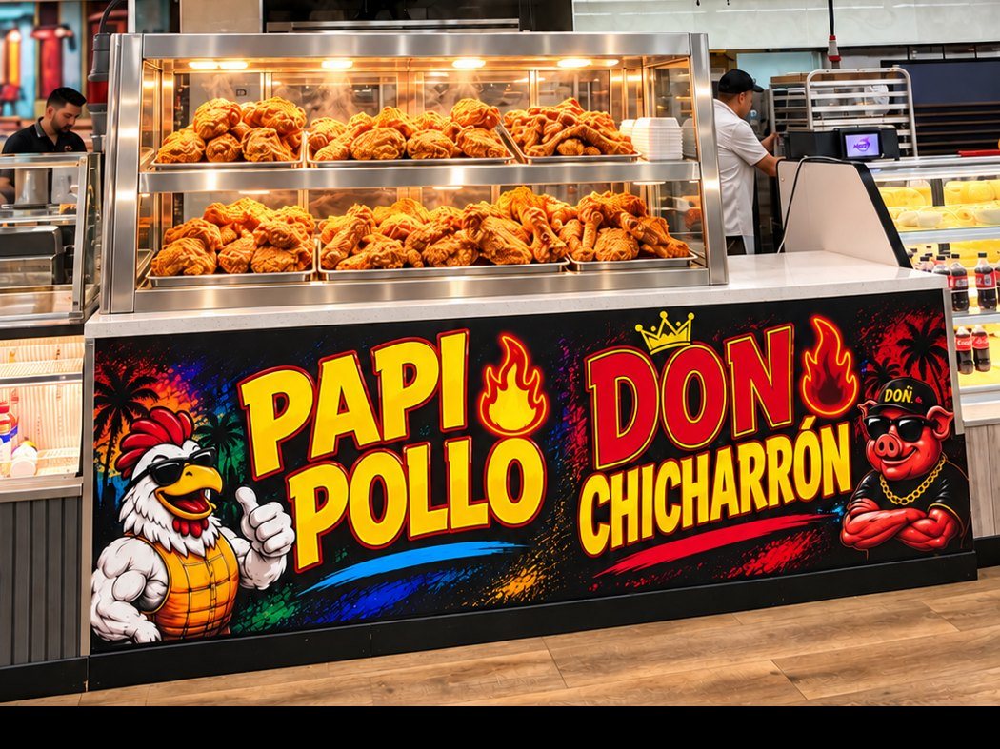

Six kitchens. One roof. Open 7 AM to 10 PM.Seis cocinas. Un techo. Abierto de 7 AM a 10 PM.
Sit down in the food hall or take it to go. Daily specials change; follow @flamingo_supermarkets and @lacasitadelosnanos for today's menu, or call (954) 228-0435.Siéntate en el food hall o pide para llevar. Los especiales cambian a diario; sigue a @flamingo_supermarkets y @lacasitadelosnanos para el menú de hoy, o llama al (954) 228-0435.
Papi Pollo & Don Chicharrón
The best fried chicken in Broward County. The best chicharrón in South Florida. Hands down.El mejor pollo frito del condado de Broward. El mejor chicharrón del sur de la Florida. Sin discusión.
Papi Pollo
The legend of crunchy chickenLa leyenda del pollo crujiente
Don Chicharrón
The boss of perfect porkEl jefe del cerdo perfecto

Flamingo Bar & Grill
Opening in the back, next to Taco Way: a full bar and grill with table seating. Sit down for lunch or dinner from any of our kitchens, order a drink and catch the game on the big screens.Abre al fondo, junto a Taco Way: bar y parrilla con mesas. Siéntate a almorzar o cenar de cualquiera de nuestras cocinas, pide algo de tomar y mira el partido en las pantallas.